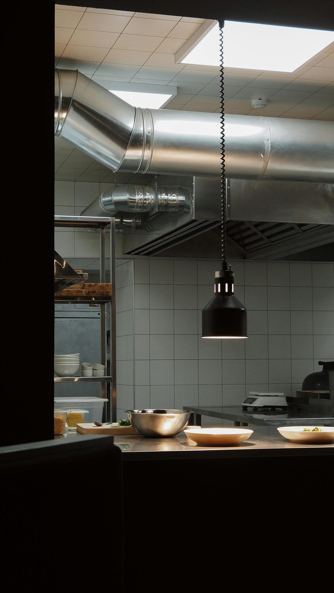

Jesteśmy małą, lokalną firmą serwisową prowadzoną przez Mariusza Nowaka. Zaczynaliśmy od ekspresów, dziś obsługujemy pełne linie kuchenne w najlepszych restauracjach i hotelach Małopolski.

Dlaczego Gastro de Gama.
Nazwa wzięła się od pasji do gastronomii i „gama” — pełnej skali usług, jakie świadczymy. Pracujemy na własnym sprzęcie diagnostycznym, części sprowadzamy bezpośrednio od producentów, a każdą wizytę kończymy protokołem i szkoleniem obsługi.
Nie jesteśmy tani, jesteśmy precyzyjni. Klienci wracają do nas, bo nasze naprawy nie wracają do nich.
Pierwsza restauracja
Ekspres La Marzocco i piec Unox w jednym lokalu na Kazimierzu.
Uprawnienia gazowe
Pełen pakiet uprawnień + certyfikaty Rational i Convotherm.
200. klient B2B
Stała opieka serwisowa nad rosnącą liczbą lokali w Krakowie.
Nowa odsłona
Nowa marka, system wizualny, większy zespół, ten sam standard pracy.
Trzy zasady, których się trzymamy.
Wycena z góry
Nie naprawiamy „w ciemno”. Diagnoza, akceptacja klienta, dopiero wtedy serwis.
Oryginalne części
Pracujemy wyłącznie na częściach z autoryzowanego kanału. Pełna gwarancja.
Punktualność
Termin jest terminem. Jeśli się spóźniamy, dzwonimy z wyprzedzeniem i rekompensujemy.
Dokumenty na ścianie warsztatu.
Pracujesz w gastronomii w Krakowie?
Wpadnij na rozmowę, pokażemy nasz warsztat i omówimy plan opieki nad Twoją kuchnią.